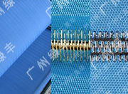

| 传动设备 | 传动装置由传动轴、带座密封轴承及摆线针轮减速机组成，传动轴外表面包优质天然橡胶，以增加传动磨擦系数，采用变频 器控制电机转速，保证滤带平稳调速。 |
| 药液混合反应装置 | 本机采用非阻塞型静态混合器（不易絮凝的物料采用搅拌动态混合器），用于混合污泥和化学药液，它被安装于污泥布料槽之前，可以将絮凝剂从四周高压注入污泥管后进入混合反应器，可使污泥颗粒与稀释后的聚合电解质溶液迅速进行碰撞接触，通过调节污泥与药液的流量以达到最佳絮凝效果和脱水效果。 |
| 进料布料装置 | 污泥经过絮凝混合器后进入进料布料装置，由导流和溢流板、平料板、侧挡板将物料均布于重力浓缩段上，为提高污泥的重力脱水效率，重力脱水区上方设置多个导水耙齿，将堆积的污泥上部自由水导入滤网渗出。 |
| 张紧装置 | 张紧装置的作用是张紧上、下滤带，通过主传动辊带动所有辊子运转，并使之向滤饼施加一定的挤压力和剪切力而脱水，本机采用带缓冲气缸张紧，通过调节气压大小来控制张紧力。 |
| 机架 | 本机机架采用优质国标方管整体牢固焊结而成，表面经等级为sa2.5级喷砂除锈，再经氟碳漆重防腐处理或热喷锌处理，其抗腐蚀能力可达10年以上。 |
| 重力脱水装置 | 重力脱水装置的主要作用是脱去物料中的自由水、间隙水，使物料的流动性减小，为下一步压滤作准备，其结构在设计上分为独立滤网重力脱水（即浓缩机），再加上上、下层压滤网两层的重力脱水，经过6-11米较长的重力脱水，污泥中的大量自由水被充分滤除，此时污泥可承受较大挤压力。 |
| 预压脱水多孔辊 | 预压脱水多孔辊是由辊面均匀分布的小孔组成的、过滤水里外都可以排出的最大脱水辊,污泥经过挤压后初步形成滤饼。 |
| 高压深度脱水辊 | 高压深度脱水辊是由若干个不同直径的辊筒组成，辊筒表面包优质天然橡胶或PE，两条滤带呈立式S形依次缠绕于辊筒之间,辊筒的直径由大逐渐减小,形成一定的压力递增,使物料所受的压力由小逐渐增大,在挤压力和剪切力的作用下,逐步形成较干的滤饼。 |
| 对夹挤压辊 | 经过高压的滤饼若仍不够理想，还需进行强力对夹辊挤压，使污泥达到最大程度的固液分离。每组对夹辊为一条固定，另一条为气囊施压活动辊，活动辊外表面包硬度较低的优质天然橡胶，以便同污泥的软接触挤压，调节合适的压力以保证污泥的通过及充分脱水。 |  |
| 纠偏装置 | 自动纠偏系统采用气缸、电磁阀、接近开关等元件组成的装置进行自动跟踪纠偏，该系统动作灵敏、可靠且使用寿命长，滤带的运行位置保持稳定对中，一般跑偏误差不超过15mm。 |
| 气动装置 | 气动装置为控制滤带张紧、纠偏及对夹辊的压力调节、操作，气动控制元件灵敏、可靠、耐用。 |
| 滤网 | 压滤网由聚酯丝编织而成，分有端接口和无端接口，根据污泥物理特性不同选用不同的滤网，本机采用强度高、透水性好、不易堵塞、表面光滑、固体回收率高、易清洗、易拆装的优质滤网。 |  |
| 清洗装置 | 清洗装置由喷水连结管和喷嘴、滚刷、阀门、防水罩、过滤器组成，喷嘴采用304不锈钢制造，每个喷嘴均可单独清洁及更换。通过滤带的回转、扇形喷射水将有效连续地把附着于滤带上的残余污泥去除。 |
| 卸料装置 | 滤网刮板的作用是将排出的滤饼刮下，刮板压力是可调整的，并保证对滤网的磨损较小。 |
| 轴承及轴承座 | 为防止腐蚀，所有轴承及轴承座采用双重V型圈密封，轴承座材质为球墨铸铁，本机采用双列调心滚子轴承，载荷承受力大，使用寿命长。 |
| 集中电控柜 | 整个污泥脱水工作系统由一套配电控制柜（手动触点控制或PLC控制器）统一操作控制，电控柜为主机及其配套设备——污泥泵、清洗水泵、搅拌机、药液泵、空压机、输送机等设备提供电源、启动、停止及电机的短路、过热/过载、缺相的控制保护和报警。 |
| 滤液收集装置 | 为防止冲洗水及滤液渗漏或飞溅出来，所有冲洗及滤液均通过接水盘收集，可分别排放或集中排放。 |
| 保护装置 | 本机的两侧设置了安全防护网及警告标志，电控限位拉线开关组成的故障应急反应系统能监测滤带调整过程中的所有动作，当调整系统在对中过程造成偏差过度时，限位开关触发并停机。 |
Copyright ©2004-2011 广州绿丰环保机械有限公司www.netgather.com All Rights Reserved.
地址: 花都区平步大道中平步工业园 邮编: 510000 联系人: 周先生
电话: 021-58888888 传真: 020-58888888 手机: 13888888888
邮箱: netgather@netgather.com
地址: 花都区平步大道中平步工业园 邮编: 510000 联系人: 周先生
电话: 021-58888888 传真: 020-58888888 手机: 13888888888
邮箱: netgather@netgather.com